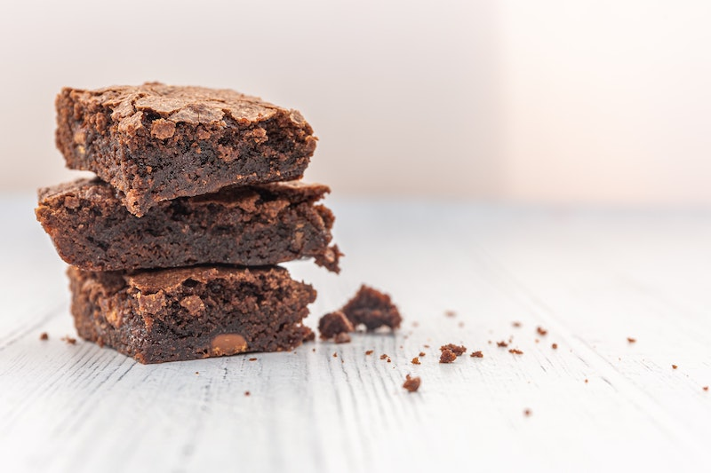

Description
A chocolate brownie or simply a brownie is a square or rectangular chocolate baked confection. Brownies come in a variety of forms and may be either fudgy or cakey, depending on their density. Brownies often, but not always, have a glossy "skin" on their upper crust. They may also include nuts, frosting, cream cheese, chocolate chips, or other ingredients. A variation made with brown sugar and vanilla rather than chocolate in the batter is called a blond brownie or blondie. The brownie was developed in the United States at the end of the 19th century and popularized there during the first half of the 20th century.
They are typically eaten by hand, often accompanied by milk, served warm with ice cream (a la mode), topped with whipped cream, or sprinkled with powdered sugar and fudge. In North America, they are common homemade treats and they are also popular in restaurants and coffeehouses.
One legend about the creation of brownies is that of Bertha Palmer, a prominent Chicago socialite whose husband owned the Palmer House Hotel. In 1893, Palmer asked a pastry chef for a dessert suitable for ladies attending the Chicago World's Columbian Exposition. She requested a cake-like confection smaller than a piece of cake that could be included in boxed lunches. The result was the Palmer House Brownie with walnuts and an apricot glaze. The modern Palmer House Hotel serves a dessert to patrons made from the same recipe. The name was given to the dessert sometime after 1893, but was not used by cook books or journals at the time.
The first-known printed use of the word "brownie" to describe a dessert appeared in the 1896 version of the Boston Cooking-School Cook Book by Fannie Farmer, in reference to molasses cakes baked individually in tin molds. However, Farmer's brownies did not contain chocolate.

Ingredients:
- 200g / 14 tbsp unsalted butter (1 3/4 US sticks)
- 200 g / 1 1/4 cups dark chocolate chips (7 oz)
- 1 cup (175g) brown sugar , loosely packed
- 3 eggs , lightly beaten
- 1 tsp vanilla extract
- 1/2 cup (75g) plain flour
- 1/4 cup (30g) cocoa powder
- Pinch of salt
- 180g/6oz dark chocolate block/bar (optional) , chopped into chunks rather than shards, (bittersweet or semi-sweet, cooking chocolate)
Steps:
- Preheat oven to 180°C/350°F (160°C fan forced).
- Spray a 20cm/8" square tin with oil and line with baking/parchment paper with overhang.
- Place butter and chocolate chips in a heatproof bowl, microwave in 30 second bursts (takes me 1m 30 sec) until melted.
- Stir until smooth.
- Add sugar and vanilla, mix, then add eggs and mix well until smooth and molten.
- Add flour, cocoa and salt and stir until smooth. Stir in chopped chocolate, pour into pan.
- Bake 24 minutes for really gooey in the centre, 28 minutes for fudgey but still very moist (my favourie, shown in video & photos), 32 minutes for moist fudge-cake-like. (See in post for toothpick testphotos).
- If you didn't use the extra chocolate for stirring in, reduce cook time by 2 minutes.
- Rest for 10 minutes before lifting out of the pan. Allow to cool for at least 20 minutes before cutting. Store in an airtight container for 4 days (bet they don't last that long!) or freeze for 3 months.